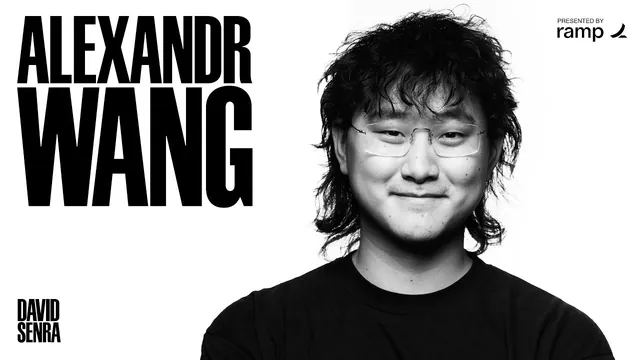

알렉산더 왕이 말하는 메타 Muse 제작기: 프로토타입 2주, 다듬기 7개월

원본 영상 보기 →
- 남들이 몰리는 곳 대신 내가 유리한 곳을 골랐어요
- "좋아졌다"는 느낌 대신 체크리스트로 출시를 정했어요
- 사람은 회사 말고 "나한테 뭘 해 주는지"에 반응해요
한 줄 요약
메타 슈퍼인텔리전스 랩(MSL)을 이끄는 알렉산더 왕(Alexandr Wang)이 David Senra와 마주 앉아, 개인 에이전트 앱 Muse를 프로토타입 2주·다듬기 7개월 만에 내놓은 과정을 이야기해요. 한마디로 "코딩 에이전트 경쟁에 뛰어드는 대신 개인 에이전트에 걸었고 100개가 넘는 체크리스트로 모델을 끝까지 다듬었다"는 거예요. Scale AI를 떠나 메타로 온 결정과 200명 넘는 직속 보고 체계 이야기도 함께 나옵니다.
전체 내용 정리
시작은 "물 좀 더 마시고 싶다"는 한마디였어요
MSL을 만들 때 저커버그는 '개인 슈퍼인텔리전스(Personal Super Intelligence)'라는 메모를 냈어요. 2025년 6월, Alexandr와 냇 프리드먼(Nat Friedman) 등이 함께 다듬은 글이에요. AI가 모두의 삶을 실제로 낫게 만들자는 내용이었는데, Alexandr는 이 메모에 이미 Muse의 많은 부분이 암시돼 있었다고 말해요. 다만 그땐 에이전트가 제대로 등장하기도 전이라 방향만 가리키는 수준이었죠.
전환점은 2026년 초였어요. Opus 4.5가 에이전트의 미래를 많은 사람에게 보여 줬고 같은 시기에 OpenClaw 열풍이 불었거든요. MSL에서 OpenClaw를 가장 먼저 써 본 사람이 Nat이었어요. Alexandr는 그 경험을 "공포와 황홀 사이 어딘가"라고 표현합니다. Nat이 물을 더 마시고 싶다고 하자, 에이전트가 보안 카메라 영상으로 Nat이 물 마시는 걸 지켜보며 "잘했어요"라고 말해 줬다는 일화도 있어요.
Alexandr가 이 신호를 무겁게 받아들인 이유가 있어요. Nat은 스트라이프(Stripe)의 초기 고객이었고 GitHub Copilot을 만드는 데도 참여한 사람이거든요. 얼리어답터로서 Nat의 감은 꽤 믿을 만한 지표였던 셈이에요. 그래서 Alexandr도 몇 주 동안 틈만 나면 자기 에이전트와 대화하며 개인 에이전트가 뭘 할 수 있는지 파고들었다고 해요.
2주 만에 만든 프로토타입, 그리고 7개월의 다듬기
Alexandr가 OpenClaw로 처음 한 일은 Nat이 만든 '심층 자기 분석' 프롬프트를 돌려 보는 거였어요. 에이전트가 이메일과 사진에 접근할 수 있어서 여러 차례에 걸쳐 깊이 파고드는 질문을 던졌대요. Alexandr는 "3년 치 상담을 한 번에 압축한 느낌"이었다고 해요.
2월에 두 사람은 같은 결론에 이르렀고 각자 메모를 써서 메타 이사회에 올렸어요. Alexandr의 메모는 슈퍼 에이전트가 소비자 제품의 최종 형태라는 내용이었어요. Nat은 두 편을 썼는데, 그중 '트러스트 이즈 어 머스트(Trust is a must, 신뢰는 필수)'가 이후 제품 설계의 핵심을 정했다고 해요.
팀은 1~2주 만에 프로토타입을 만들어 이사회에서 시연했어요. 마스코트인 Jolly와 Muse Charm의 초기 버전도 이미 그 첫 시연에 있었대요. 그런데 진짜 어려운 건 그다음이었어요. 가끔 마법처럼 작동하지만 대부분은 고장 나던 프로토타입을, 안심하고 내놓을 수 있는 소비자 제품으로 만드는 데 7개월이 걸렸어요. 그 사이 저커버그도 집안일, 아이들과의 시간, 종합격투기(MMA) 훈련 영상 코칭까지 직접 써 봤다고 해요.
다들 코딩 에이전트로 몰릴 때, 메타는 개인 에이전트에 걸었어요
OpenClaw 열풍은 금방 꺼졌어요. 마법 같은 순간은 있었지만 대체로 잘 안 됐거든요. Alexandr는 OpenClaw를 만든 피터 스타인버거(Peter Steinberger)를 비전가로 존중한다고 먼저 말해요. 그러면서 Muse의 차이는 화려하지 않은 부분, 즉 모델과 제품 경험의 디테일을 끝까지 갈아 낸 데 있다고 설명합니다.
당시 업계 분위기도 짚었어요. 2월엔 Opus와 Claude가 코딩에서 압도적으로 앞서 있었고 Alexandr 표현으로 "앤트로픽이 업계를 장악해 가던" 시기였어요. 코딩 에이전트만이 중요하다는 게 업계의 통념이었고 다들 그 시장으로 몰려가려는 압력이 컸대요. 메타는 그 흐름 대신 개인 에이전트를 택했어요.
이유는 메타의 위치에 있었어요. Alexandr는 저커버그에게 처음부터 이렇게 말했대요. 우리 삶은 '하고 싶은 일'과 '해야 하는 일'로 섞여 있고 AGI의 약속은 해야 하는 일을 AI가 맡아 주는 거라고요. 그런데 인스타그램·왓츠앱·페이스북은 사람들이 '하고 싶은 일'을 하는 곳이에요. 매일 35억 명이 쓰는 배포망까지 있으니, 메타가 이길 곳은 업무나 코딩이 아니라 개인·소비자 AI라는 판단이었어요.
출시 기준은 100줄짜리 체크리스트가 전부 초록색이 되는 순간이었어요
7개월 동안 팀은 이상적인 개인 에이전트가 갖춰야 할 구체적인 행동과 능력을 100개 넘게 스프레드시트로 정리했어요. 항목마다 평가(eval)를 만들고 모델이 각 항목을 잘하도록 훈련했어요. 정기 리뷰 때마다 못하는 항목을 찾아 개선하는 식으로 모델의 모서리를 계속 다듬었고요. Alexandr는 이게 메타 문화이기도 하다고 말해요. 뭘 측정할지 정해지면 전환율·추천율·온보딩을 최적화하던 것처럼 끝까지 다듬는 거죠.
언제 출시할지도 숫자로 정했어요. 각 항목에 '출시를 막는 기준선'과 '좋음 기준선'을 따로 뒀대요. 80개 항목은 초록인데 20개가 빨간 체크포인트도 많았지만 그걸로는 부족하다고 봤어요. 모든 항목이 처음으로 초록색이 된 건 Muse Spark 1.3을 특별 훈련한 버전이었다고 해요. 여기에 직접 써 봤을 때 이전과 확실히 다르다는 체감이 더해지면서 출시가 결정됐어요.
모델과 제품을 합쳐 참여 인원은 200명이 안 됐다고 해요. 메타가 올해 내놓을 가장 중요한 제품이라는 걸 다들 알았지만 일부러 작게 유지했대요. Alexandr는 큰 조직에서 나온 제품이 PM마다 넣고 싶은 기능을 밀어 넣어 '스무디'처럼 섞여 버리는 걸 경계했어요. Muse는 하나의 분명한 관점을 가진 '하나의 작품'이어야 했고 그 관점의 주인은 Nat이었다고 해요. 진행자는 마침 녹화일이 스티브 잡스 사망 15주기였다며 "애플은 1만 개의 목숨을 가진 스티브 잡스"라는 문장을 떠올리기도 했어요.
밈을 올리는 이유가 있었어요
사용자 수는 공개적으로 "수백만"이라고만 했어요. 대신 Muse가 역대 가장 빠르게 성장한 소비자 AI 앱이라는 걸 보여 주는 다른 사람들의 그래프를 리트윗했다고 해요. 진행자가 "수백만이면 수억일 수도 있죠"라고 하자 그렇다는 듯 웃고 넘어가요.
출시 뒤 Alexandr의 X(트위터) 활동이 화제가 됐는데요. 밈을 쉴 새 없이 올렸거든요. 이유는 두 가지였어요. 하나는 쏟아지는 AI 신제품 소식 속에서 Muse가 뚫고 나와야 했기 때문이에요. 메타의 배포망으로 다들 알게는 할 수 있어도, 문화적으로 화제가 되는 건 다른 문제라고 봤어요. 다른 하나는 "메타를 다시 쿨하게" 만들고 싶었기 때문이고요.
트윗은 전부 Alexandr가 직접 썼대요. 회의 중에도 밈이 떠오르면 참기 힘들 정도였다고 해요. 별생각 없이 올린 글이 오히려 반응이 컸고 그때 "인터넷은 위험과 의외성에 보상한다"는 걸 다시 떠올렸다고 해요. Nat은 회의에서 "Muse 사용자에 대해 배울 줄 알았는데 Alex의 머릿속에 대해 배우고 있다"고 농담했대요. 추적 데이터는 없지만 Alexandr는 이게 실제로 성장에 영향을 줬다고 봐요.
사람들은 회사가 아니라 "나한테 뭘 해 주는지"에 관심 있어요
Muse를 계속 쓰게 만든 장치로 Alexandr는 세 가지를 꼽아요. 첫째, 최대한 빨리 '와' 하는 순간에 닿게 하는 것이에요. 에이전트를 처음 쓰는 사람에겐 놀랄 일이 많아서 이 제품은 그게 자연스럽다고 해요. 둘째, 그런 '와' 순간을 겪은 사람들의 이야기를 모아 제품을 알리는 거예요. 초기엔 광고보다 Alexandr가 흥미로운 사용 사례를 계속 리트윗한 게 컸대요.
진행자는 다른 AI 회사들의 광고가 자기 얘기만 한다며 혹평했어요. 1900년대 초 홉킨스(Hopkins)가 쓴 『과학적 광고(Scientific Advertising)』를 들며 "사람은 자기 이익에만 관심 있다, 이게 나한테 뭘 해 주는지로 시작하라"고요. Alexandr도 동의했어요. 대부분의 사람은 AI 회사나 연구에 관심이 없고 이게 자기에게 뭘 해 줄 수 있는지만 궁금해한대요. 마스코트 Jolly가 서류 가방을 들고 출근하는 밈("월요일에 출근하는 내 얼굴")이 터지면서 이 캐릭터를 온갖 상황에 넣을 수 있겠다는 걸 깨달았다고 해요.
셋째는 '트러스트 폴(trust fall, 믿고 뒤로 넘어지기)' 과정이에요. 처음엔 작은 일을 맡겨 보고 해내면 조금 더 큰 일, 그다음 더 큰 일을 맡기는 거죠. 성공하는 Muse 사용자는 이 단계를 밟으며 매번 일이 제대로 처리되는 경험을 한다고 해요.
진행자가 든 사례도 있어요. 1천억 달러 규모 회사를 이끄는 지인이 전용기(Flexjet)에 신분증을 두고 내렸는데, Muse에 "나는 전혀 관여하고 싶지 않다, 네가 다 알아서 해"라고 맡겼대요. Muse가 퀵 배송을 잡고 사무실 보안을 통과해 위층 사무실까지 가져다 놓게 했다는 거예요. 그 대화 스크린샷 서너 장이 최고의 마케팅이었다고 하죠. Alexandr는 요즘 소비자 제품은 스크린샷으로 퍼져야 한다며 스크린샷 속 마스코트가 "이건 Muse"라는 걸 바로 알려 준 게 컸다고 말해요.
"어릴 때 꿈꾸던 어른의 삶"을 돌려주고 싶대요
Alexandr 본인은 Muse로 여러 워크플로를 만들어 두고 '두 번째 뇌'처럼 쓴다고 해요. 그가 쓴 짧은 글(조회 550만 회)에서 Muse를 "모두가 자기 마음 너머에 두 번째 마음을 갖는 것"이라고 표현했죠.
Alexandr의 비전은 이래요. 아이일 땐 우주비행사가 되거나 세상을 바꾸는 큰 꿈을 꾸는데, 학교를 마치고 직장에 들어가 몇 년이 지나면 그 꿈과 야망이 다 빠져나가 버려요. Alexandr는 이걸 '좀비가 된다'고 표현해요. Muse 같은 개인 에이전트가 꿈꾸고 이루고 더 크게 꿈꾸는 '주체성(agency)의 에스컬레이터'를 평생 이어 주는 도구가 되길 바란다고 해요. 그의 글에는 이런 문장도 있어요. "지금까지 세상은 원하는 걸 현실로 만드는 법을 찾아낸 소수의 광적인 사람들이 만들어 왔다. 하지만 모든 사람의 주체성이 완전히 켜진 인류는 아직 본 적이 없다."
Scale AI를 떠난 결정, 그리고 "다이아몬드 채굴"식 조직
저커버그와의 인연은 메타의 알렉스 슐츠(Alex Schultz)가 2021~2022년쯤 소개해 주면서 시작됐어요. 첫 미팅을 잡는 데만 1년이 걸렸대요. 저커버그가 정말 중요한 일에만 시간을 쓰려고 우선순위를 무섭게 정리하기 때문이라고요. 그러다 Llama 4가 기대에 못 미친 뒤 저커버그가 "통화할 시간 있어요?"라고 연락해 왔어요. 처음엔 조언을 구하는 대화였는데, 첫 연락부터 발표까지 5~6주 만에 거래가 성사됐어요. 메타가 Scale 지분 49%를 갖고 Scale은 계속 운영되며 Alexandr와 일부 인원이 메타로 오는 구조였어요.
결정은 쉽지 않았대요. 창업부터 9년, 삶의 3분의 1을 쏟은 회사였으니까요. 그런데 당시 AI 쪽 메타는 Alexandr 표현으로 '흠집 난 물건' 같았고 그게 오히려 창업가 기질을 자극했다고 해요. 사실상 연구소를 다시 창업하는 일이었거든요. 원칙은 처음부터 분명했어요. 작고 수평적이고 기술 중심이며 인재 밀도가 높은 팀이에요.
일하는 방식도 완전히 바뀌었어요. Scale에선 모든 일을 직접 할 줄 알아야 한다고 믿었고 회사가 Alexandr의 관점 그 자체가 됐지만 그만큼 병목도 됐대요. 메타에선 연구자도 디자이너도 아니니 최고의 사람을 데려와 마음껏 일할 환경을 만드는 '코치' 역할을 한다고 해요. Alexandr는 이걸 '마천루 짓기'와 '다이아몬드 채굴'로 비유해요. 데이터 라벨링이나 배송처럼 성과가 선형인 일은 효율을 1~2%씩 짜내는 마천루형이고 연구처럼 대부분은 실패해도 한 번의 성공이 백만 배를 돌려주는 일은 다이아몬드 채굴형이라는 거예요. Scale이 전자, 지금의 MSL이 후자예요.
그래서 직속 보고자가 200명이 넘어요. TBD라는 연구 그룹의 연구자들은 전부 Alexandr에게 직접 보고해요. 기술 결정은 팟(pod)별 기술 리드가 정리하지만 사람 관리나 관료 체계는 최소로 둔다는 '반(反)관료주의' 선언이라고 해요. Alexandr는 200명을 잘 관리하는 최고의 매니저라고는 말 못 하겠다면서 이 사람들에게 필요한 건 매니저가 아니라 "요리할 공간(room to cook)"이라고 말합니다.
핵심 인사이트
- 남들이 몰리는 곳 대신 내가 유리한 곳을 골랐어요: 업계가 코딩 에이전트로 몰릴 때 메타는 35억 명의 일상이라는 자기 강점이 통하는 개인 에이전트를 택했어요. 경쟁이 치열한 시장보다 내 자산이 먹히는 시장을 고르는 판단이 출발점이었다는 점에서 1인 사업자에게도 그대로 적용돼요.
- "좋아졌다"는 느낌 대신 체크리스트로 출시를 정했어요: 100개가 넘는 행동 항목마다 출시 차단 기준선을 두고 하나라도 빨간불이면 내놓지 않았어요. 에이전트는 결과가 들쭉날쭉해서 한 번 실망하면 사람들이 "쓰레기"라고 느낀다는 게 이유였어요. AI 자동화를 고객에게 넘길 때도 같은 원리가 통해요.
- 사람은 회사 말고 "나한테 뭘 해 주는지"에 반응해요: 연구 성과나 브랜드 대신, 실제 사용자가 겪은 '와' 순간과 그 스크린샷이 Muse를 퍼뜨렸어요. 작은 일부터 맡기며 신뢰를 쌓는 '트러스트 폴' 구조도 고객이 AI 서비스를 계속 쓰게 만드는 장치예요.
오늘 당장 해볼 것
- 내 업무에서 AI 에이전트에 맡길 일을 '작은 것 → 중간 → 큰 것' 세 단계로 하나씩 적어 보세요. 첫 단계부터 맡겨 보고 성공하면 다음으로 넘어가면, Alexandr가 말한 트러스트 폴을 직접 겪으면서 어디까지 믿고 맡길 수 있는지 감이 잡혀요.
- 고객에게 넘기는 자동화가 있다면 "꼭 돼야 하는 동작" 10개를 표로 정리하고 항목마다 통과·실패를 표시해 보세요. 메타가 100개짜리 표로 출시를 정한 것처럼, 하나라도 실패면 아직 넘기지 않는다는 기준이 생기면 납품 품질이 훨씬 안정됩니다.
- 내 서비스 소개 글을 다시 열어 첫 문장이 "저는/저희는"으로 시작하는지 확인해 보세요. 그렇다면 고객이 얻는 결과로 바꾸고 실제 결과 화면 스크린샷 한 장을 붙여 보세요. 사람들은 회사보다 "이게 나한테 뭘 해 주는지"에 반응한다는 게 이 인터뷰의 반복된 메시지예요.